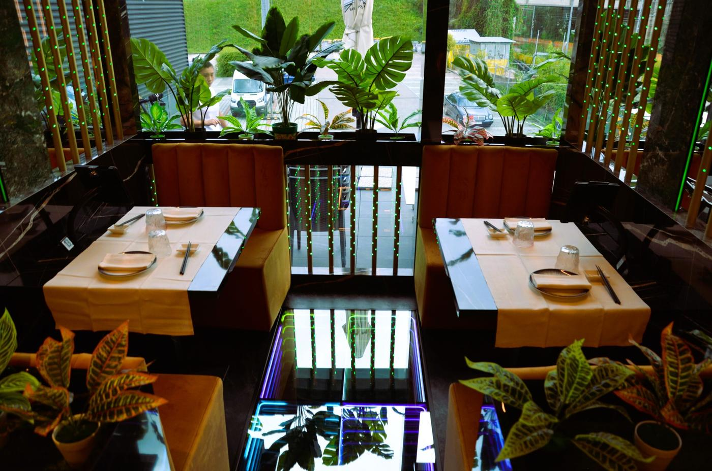
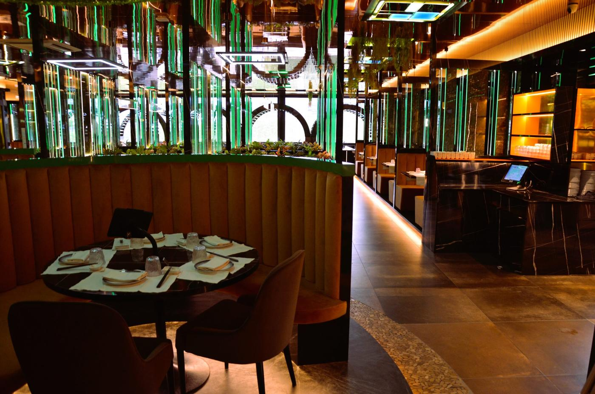
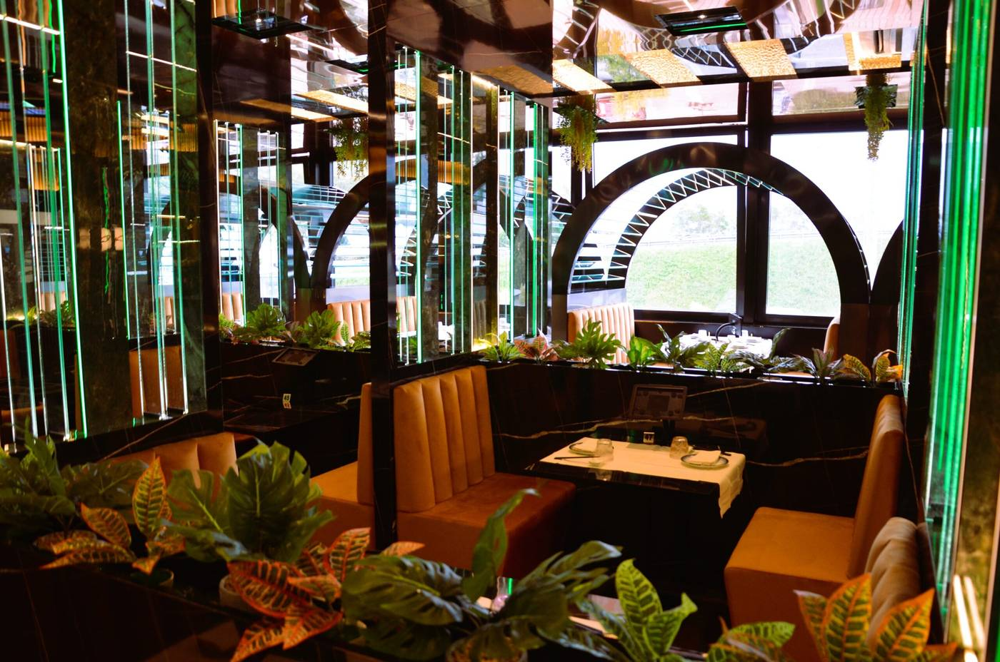
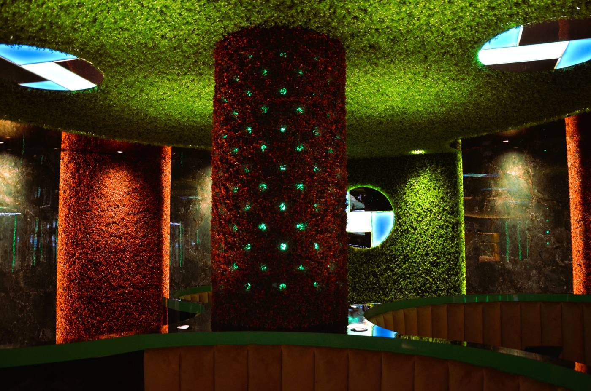

Le sale
Abbiamo ampi spazi per accogliervi, ma abbiamo voluto mantenere lo spirito del vero Giappone, con intimità e riservatezza. Due sale divise e una zona esterna.
- I primi mattoni
Una vecchia concessionaria d'auto viene ristrutturata da cima a fondo, e dentro nasce Sushi Land.
- La zona tatami e il bar
Si mangia rasoterra, in stile giapponese. Il bar vi accoglie appena entrati.
- L'apertura
Meno di 4 mesi dal primo mattone, e Sushi Land apre.
- Sala grandeTanto spazio, mantenendo la giusta privacy: tavoli non ammassati, al centro tavoli modulabili con comodi e soffici divani.
- Tavoli tondiIntimi, particolari, vicino alla sala centrale: per le occasioni speciali.
- Le casetteSi mangia in stile giapponese, tra effetti luminosi 3D. Provate a guardare i pavimenti.
- La seconda salaModulabile, con tavoli che si possono raggruppare.




Prenotare una cena o una festa
Via del Brennero 111, Trento
Tel. 0461 158 0027
sushilandtrento@gmail.com